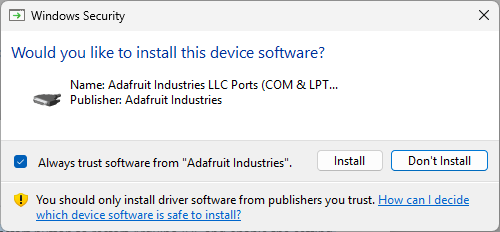
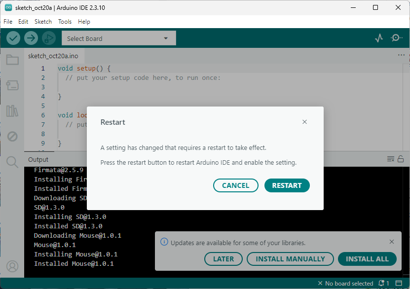
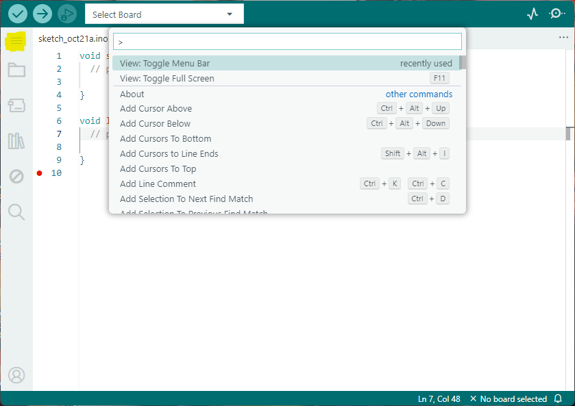
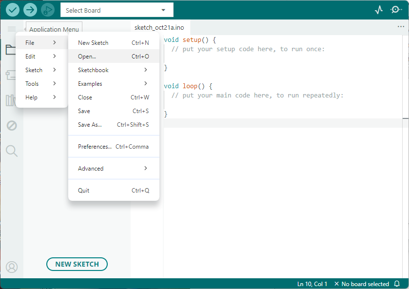
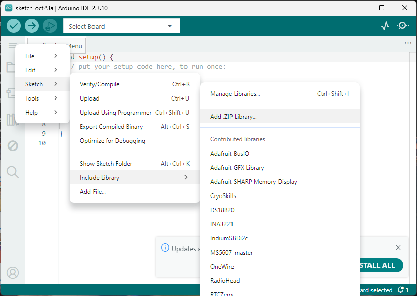
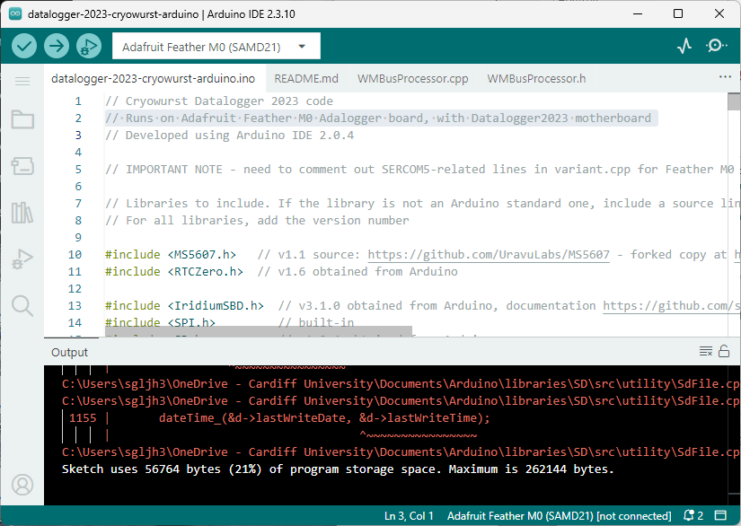
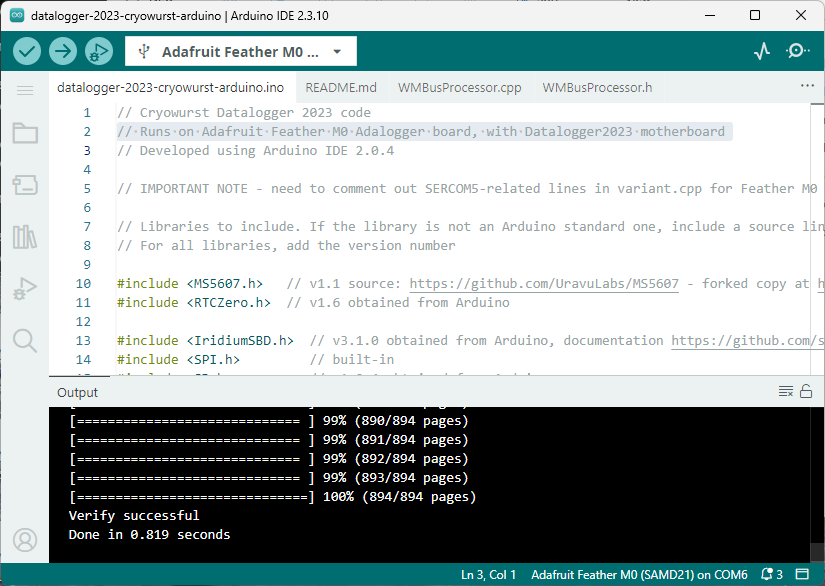

Arduino IDE#
The 2023 versions of the datalogger firmware were developed using the Arduino IDE. This provides an interface to manage libraries and other dependencies, in addition to a serial monitor utility. If you are using the 2023 datalogger firmware, it is recommended to use the Arduino IDE. The instructions below describe the steps in setting up the IDE for the 2023 Cryowurst and Cryoegg datalogger firmware.
Install Arduino IDE (v2.0)#
To begin, download the Arduino installer or use the local version in the offline childev bundle if this is available. Run the installer (arduino-ide_2.3.10_Windows_64bit.exe).
Select I Agree on the license agreement screen
Select the “Only for me” option on where to install the software and press Next >.
Make note of the Destination Folder (likely in your AppData folder) and select Install to continue.
When completed, keep Run Arduino IDE. There may be several Windows dialog boxes requiring administrative access from dpiinst-amd64.exe.

Fig. 27 Dialog box to install the Adafruit and Arduino drivers.#
Install Adafruit Industries LLC Ports (COM & LPT…), Arduino USB Driver, Genuino USB Driver when presented with these dialog windows.

Fig. 28 Restart the Arduino IDE.#
The Arduino IDE will ask you to restart the IDE. Wait until the built-in libraries have finished installing (check the Output window), and then restart Arduino IDE.
If there is no menu bar at the top of Arduino IDE, press
CTRL + SHIFT + Pto open the command palette, type View: toggle menu bar and pressEnterto show the ‘hamburger’ icon on the left hand side of the program. This gives access to theFilemenu options needed to open a new folder.

Fig. 29 Toggle the menu bar icon on the left hand side to access the File menu.#
Setup Datalogger (2023) firmware#
If you are installing the firmware offline, extract the datalogger firmware folders
datalogger-2023-cryoegg-arduinodatalogger-2023-cryowurst-arduino
to a sensible location on your hard drive. We recommend keeping firmware and software from CHIL in a folder in your user home directory (i.e. C:/Users/<username>/chil/) or directly on the C: drive (i.e. C:/chil/).
Close the Arduino IDE. Identify the packages installation location for Arduino IDE (typically C:/Users/<username>/AppData/Local/Arduino). Extract the adafruit.zip archive to the packages folder.
Important
Different ZIP extraction tools treat nested folders differently. Avoid extracting a nested folder to C:/Users/<username>/AppData/Local/Arduino/packages. The resulting file structure should be as below:
.../Arduino/
packages/
adafruit/
hardware/
tools/
arduino/
builtin/
Open the Arduino IDE and check verify that the Adafruit boards are available. Open the Boards Manager (CTRL + SHIFT + P and enter Toggle Boards Manager). Type Adafruit in the search bar at the top and verify that the Adafruit SAMD Boards package by Adafruit is installed.
Open the relevant datalogger-2023-... folder in the Arduino IDE by selecting the menu bar (3 horizontal lines) on the left hand side and using File > Open....

Fig. 30 Opening a folder in Arduino IDE.#
You need to install additional libraries before you will be able to compile and upload the datalogger firmware. To do this, open the menu bar and select Sketch > Include Library > Add ZIP Library. Select one the *.zip archives in the lib/ within the datalogger-2023-* folder and press Open on the file dialog. Unfortunately, Arduino does not allow you to batch install files so you will need to do this for each library in the folder.

Fig. 31 Adding ZIP libraries to Arduino IDE.#
Note
You only need to install the libraries once, not for each set of datalogger firmware.
Open the Select board menu (top left) and search for Adafruit Feather M0. Select this board and press OK. Validate the setup process by pressing the Verify button (check mark) in the top left of the window. You may see some warning messages in the compiler output window. The setup process has worked if you see a Sketch uses … bytes … message at the bottom of the compiler window.

Fig. 32 Verify and compile the firmware.#
If you have the datalogger board available, connect the USB cable to the Adafruit Feather M0 microcontroller and select the upload button (arrow).
Tip
If you receive a message that no upload port has been selected, select the Adafruit Feather M0 device from the Select board dropdown in the top left.

Fig. 33 Output from successfully uploading firmware to the datalogger.#
Important
Issues with Receiver Channel 2
If the second receiver channel does not receive any packets when channel 1 does and the signal level is high (> -100 dBm), it is possible that you will need to manually update a file in Adafruit package to enable the second recevier.
Navigate to packages/adafruit/hardware/samd/1.7.14/variants/feather_m0 in your Arduino IDE installation folder (C:/Users/<username>/AppData/Local/Arduino15) and open variant.cpp in a text editor.
Locate the code block below by searching for Serial5 within variant.cpp and comment out the lines indicated.
Uart Serial1( &sercom0, PIN_SERIAL1_RX, PIN_SERIAL1_TX, PAD_SERIAL1_RX, PAD_SERIAL1_TX ) ;
// Comment the line below
// Uart Serial5( &sercom5, PIN_SERIAL_RX, PIN_SERIAL_TX, PAD_SERIAL_RX, PAD_SERIAL_TX ) ;
void SERCOM0_Handler()
{
Serial1.IrqHandler();
}
// Comment this function
// void SERCOM5_Handler()
// {
// Serial5.IrqHandler();
// }
Once you have done this, try recompiling (‘verifying’) and uploading the firmware to the datalogger and check that you are receiving data from channel 2. If not, there may be another problem.